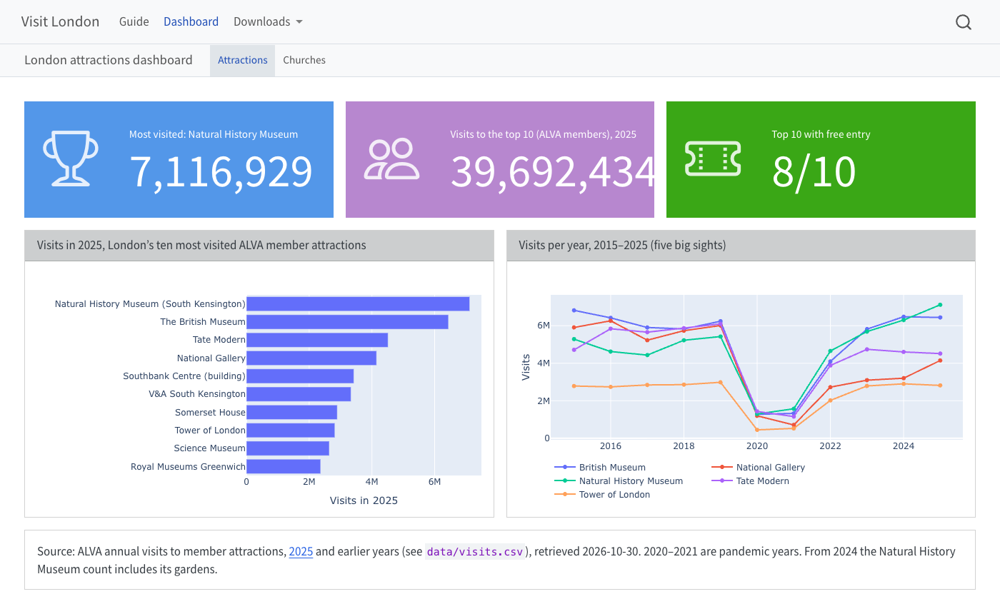
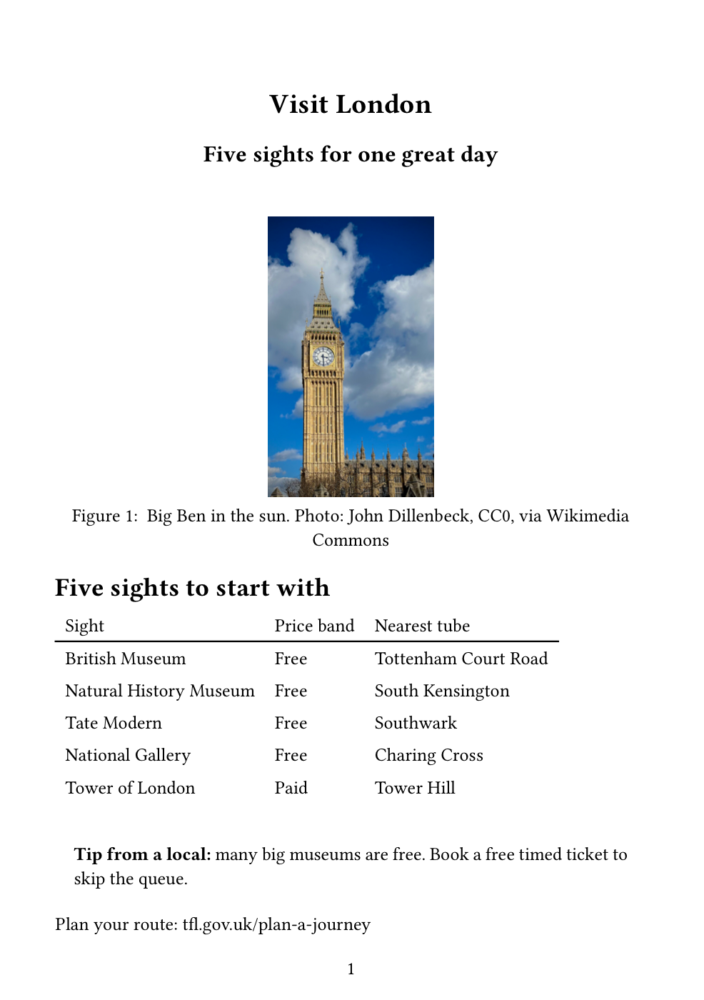
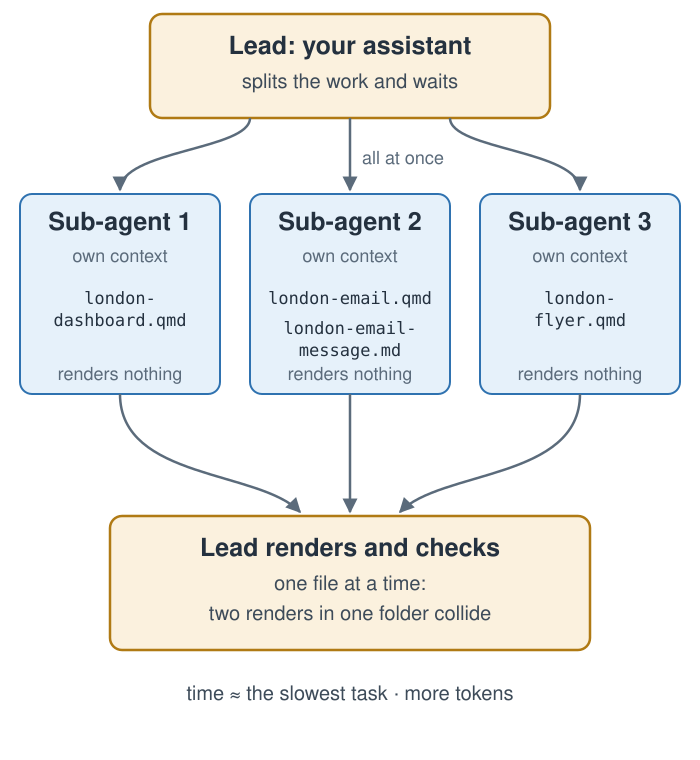
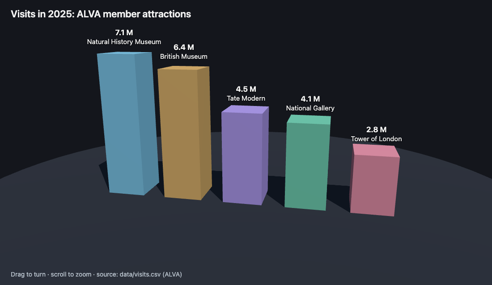

6 One Guide, Five Audiences
Quarto, reproducible publishing, coding assistants, Markdown, Python, EPUB, data analysis, k-means clustering
Correct one fact, then count the documents that repeat it. Written by hand, a dashboard, a partner brief and a printed flyer each hold their own copy of the same facts, and every copy has to be found and fixed. The one that is missed is the one that disagrees in public.
This chapter writes all three in one step: a dashboard for managers, a Word brief and its covering email for partners, and a flyer for walk-ins. The dashboard and the brief read the same data file, so a corrected count reaches both; the flyer copies its facts from data/sights.csv, a choice Section 7.5 returns to. None of the three needs another to exist, which makes them the first job in this book worth splitting across several assistants at once, and the first chance to ask when that is worth what it costs.
- Choose a format for each audience, and set it.
- Decide when sub-agents are worth their cost, and prompt them safely.
- Check each output as its reader would use it.
- Judge when a raw Typst block or a 3-D chart earns its place.
6.1 Content once, format per audience
Each audience gets the format that suits it, and each format is a setting. This chapter makes the first three outputs in Table 6.1 and the optional advert; Chapter 7 makes the website.
| Audience | Output | Setting |
|---|---|---|
| Managers | dashboard | dashboard |
| Partners | Word brief and email | docx |
| Walk-ins | A5 flyer (PDF) | typst, papersize: a5 |
| Social media | square advert | raw Typst page size |
| Visitors | website | type: website |
A dashboard is a page of charts and key numbers arranged in a grid. In a .qmd file with format: dashboard, a level-1 heading starts a page, a level-2 heading starts a row, and each cell’s output becomes a card in that row (Quarto dashboards documentation, checked 2026-10-31). The guide’s dashboard has two pages; its outline, without the code, is:
# Attractions
## Row {height=25%}
::: {.valuebox icon="trophy" color="primary"}
Most visited: `{python} top_name`
:::
## Row
# Churches# Attractions and # Churches start the two pages, and {height=25%} gives the first row a quarter of the page’s height. That row holds the value boxes, each showing one key number with a label and an icon; the next row holds the charts, one card per cell. A value box is written as a div: a block of Markdown between two lines of three colons, whose class in braces, .valuebox, tells Quarto what to make of it. Quarto’s other special blocks, such as callouts, use the same syntax.

examples/london/london-dashboard.qmd.
It also needs a second data file. data/visits.csv holds the yearly visits to the five sights from 2015 to 2025, from ALVA’s annual tables. Two notes travel with it, from the data’s README. The years 2020 and 2021 are pandemic years, not comparable with the others. And from 2024 the Natural History Museum’s count includes its reopened gardens, so for that museum 2024 and 2025 are not like-for-like with earlier years. data/churches.csv lists the ten cathedrals and churches on Visit London’s own list, an editorial choice with no visitor numbers.
A Word brief turns Markdown headings into Word’s heading styles, so the partner’s copy has a navigable outline and working links. Its covering email is not rendered at all: it is a plain Markdown file whose message sits in a text block, to be copied into an email client, with the brief attached. The email deliberately quotes no visitor numbers. The numbers stay in the brief, where they are computed and cited, as the project’s rules require.
A flyer is a one-page Typst PDF on A5 paper. papersize accepts any of Typst’s paper names (a5, a4, us-letter and so on), and margin sets the margins (Quarto’s Typst documentation, checked 2026-10-30).

examples/london/london-flyer.qmd.
6.2 Sub-agents: one lead, many hands
The three outputs are independent: none needs another to exist. That makes them a candidate for sub-agents, separate assistant sessions that your assistant starts for one task each (Figure 6.3). Each sub-agent has its own context, does its task and reports back; your assistant, the lead, waits for all of them and then checks the results.

The gain is time: three independent tasks take about as long as the slowest of them. The cost is tokens, because each sub-agent does its own reading, reasoning and tool calls. The three assistants differ in how they offer it (all checked 2026-10-31). Claude Code starts sub-agents in parallel when a prompt asks for them. Codex enables sub-agents by default and starts them when asked, and its documentation warns both that parallel edits “can create conflicts” and that sub-agent runs use more tokens. Antigravity’s command-line agent can delegate to parallel sub-agents, but its documentation does not say a prompt can require it, so it may do the tasks itself.
Two rules make parallel work safe, and the prompt below states both. Each sub-agent writes only its own files and renders nothing, so no two of them touch the same file. The lead renders the files one at a time, because two Quarto renders, or two environment updates by uv run, in the same folder can collide. Sub-agents read AGENTS.md too, so the project’s rules still apply to their work.
Use sub-agents when tasks are independent, substantial and write different files. Do not use them for tasks where one needs another’s result, for several edits to the same file, or for small tasks where the overhead of starting and briefing a sub-agent outweighs the work. A prompt that might run without sub-agents should say what to do then: the prompt below ends its first sentence with “none? do the items in turn”.
The office also wants the guide in French and Spanish, each a new file made from london.qmd. Is that a job for sub-agents?
Yes: the two translations are independent, substantial and write different files (say london-fr.qmd and london-es.qmd), and the lead renders them one at a time. If both first needed a shared list of place names, write that list first, then split the work.
6.3 One prompt, three audiences
Run three sub-agents in parallel, one per item (none? do the items in turn). Each reads london.qmd, data/ and images/, hides code, follows AGENTS.md and only writes its own files: no rendering.
1. london-dashboard.qmd (format: dashboard): Attractions page (value boxes: top attraction, total `visits_2025`, number free; Plotly bars by attraction; a Plotly line of visits by `year` from data/visits.csv; end each chart cell with `fig`, assigning `fig = fig.update_layout(…)`); Churches page (data/churches.csv, names linked to `visit_london`).
2. london-email.qmd: docx partner brief (2025 numbers as inline code, five sights with official links, getting around, sources); london-email-message.md: its covering email in a text block, no numbers.
3. london-flyer.qmd: one A5 Typst page (papersize: a5): Big Ben photo, five sights with price band and nearest tube, local tip.
Then render the three .qmd files yourself, one at a time, and check each.starts three sub-agents · waits · renders the three .qmd files one at a time
approve its commands · open the four outputs
The lead’s renders are uv run quarto render london-dashboard.qmd, then london-email.qmd, then london-flyer.qmd, and it reports each sub-agent’s progress as it goes. The prompt is long because it is three specifications in one, each as concrete as a single prompt would be. The lead checks each file it renders; the office’s checks are yours. Open each output as its reader would: can a manager find the top attraction without reading a sentence, can a partner forward the brief and its email as they are, and does the flyer fit on one A5 page?
A partner asks for this year’s total visits in the covering email itself. Where should the number go, and why?
In the brief, as inline code, with the email pointing to it. The email is a plain Markdown file that is never rendered, so a number typed there is a copy that will not follow the data.
“End each chart cell with fig” is there because of a failure seen in practice: a Plotly chart appears twice in a dashboard card when the cell both calls fig.show() and returns the figure. Assign the figure, end the cell with its name, and nothing else. If a chart’s legend looks clipped, ask for a horizontal legend with a fixed entrywidth; if the flyer spills onto a second page, ask for a smaller photo.
6.5 The sights in three dimensions (optional)
The guide’s data can also be drawn as a map: the five sights as columns as tall as their 2025 visits, Visit London’s ten churches as short markers, and the London boroughs around the Thames (Figure 6.5). Nothing in the project changes: the scene is drawn from the same files. The tallest column is the Natural History Museum, at 7.1 million visits; the only paid sight is the Tower of London.
This 3-D view needs WebGL. 2025 visits: Natural History Museum 7,116,929; British Museum 6,440,120; Tate Modern 4,514,266; National Gallery 4,147,544; Tower of London 2,817,852.
Every point, height and border is computed from the project’s files: coordinates from data/places.csv (from Wikidata, CC0), visits from data/visits.csv, price bands from data/sights.csv, and borough boundaries from the Office for National Statistics, clipped at the high-water mark so the tidal Thames appears as the gap between the boroughs on its two banks. A script written for the workshop’s slides, using the three.js library, only draws them. The borough tones tell neighbours apart and encode no data.
6.5.1 Asking for three.js
You do not need to know three.js to ask for it. Name the library, the data and what you want to do with the result, and check the numbers:
Create visits-3d.html with `three.js` from a CDN: a labelled 3-D bar per `attraction` in data/visits.csv, as tall as its `visits` in the latest `year`, that I can drag to turn. Put the numbers in the page so it opens by double-click, then check them against the CSV.
three.js is a free JavaScript library (MIT License) that draws 3-D scenes with WebGL, the browser’s built-in 3-D graphics, so the reader installs nothing. Two details of the prompt matter. It asks for the numbers to be written into the page, because a page opened by double-click cannot read local files. And the page loads three.js from a content delivery network (CDN), so it needs the internet to work; a published page keeps that dependency, which is why this book, like the workshop’s slides, ships its own copy of the library.
A 3-D chart has to earn its third dimension. Perspective makes bars harder to compare than a plain bar chart: the near bar looks taller than an equal bar behind it. Figure 5.2 is the better chart for comparing visits. Use 3-D when the third dimension means something, as height does on a map, or for delight, and say which.
Summary
- Each audience’s format is a setting: a dashboard, a Word brief, an A5 flyer.
- Outputs whose code reads the data follow it; the flyer’s copied facts do not.
- Sub-agents suit independent, substantial tasks that write different files.
- Each sub-agent writes only its own files; the lead renders one at a time.
- Open each output as its reader would: the lead’s checks do not replace yours.
The office now has a version of the guide for every reader but one, and all of them sit on your computer. Visitors need a website: the next chapter publishes one, then changes one number to test whether every reader really does get the same fact.
Further reading
- Quarto, Dashboards and dashboard layout (checked 2026-10-31).
- Quarto, Typst page layout; Typst, page settings (checked 2026-11-12).
- Sub-agents in Claude Code, Codex and Antigravity (checked 2026-10-31).
- three.js and its examples gallery (checked 2026-11-06).